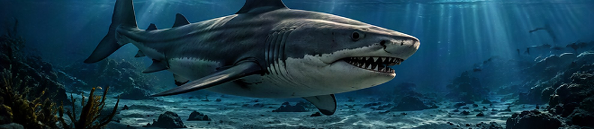
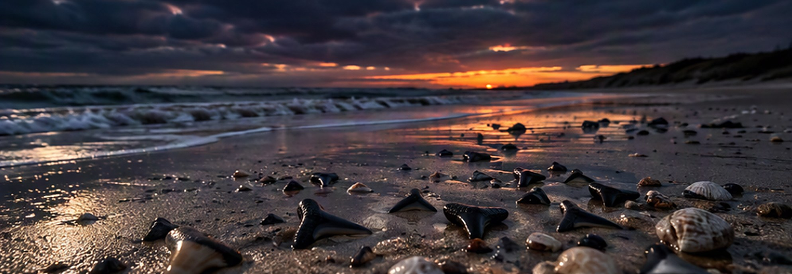

De tandenplaat
Meer dan tweehonderd haaientanden uit Cadzand en Breskens, gesorteerd in vier groepen. Beweeg met je muis over de plaat of tik erop.

Blauwe vlakken = de vier groepen · Punten 1–4 = moderne tanden van nog levende haaien · Punt 5 = de grootste fossiele tanden.
Striatolamia / zandtijgerhaai
Striatolamia is een uitgestorven verwant van de zandtijgerhaai. De slanke, lange tanden hebben vaak fijne streepjes aan de binnenkant; daar komt de naam vandaan (“gestreepte Lamia”). Het waren snelle jagers op vis.
Mako- / Lamnidae-achtigen
Tanden van makoachtige haaien: driehoekig tot slank, glad en zonder kartels, met een duidelijke wortel. Lamnidae is de familie van de makohaai en de witte haai.
Carcharhinidae — requiemhaaien
De requiemhaaien zijn een moderne familie, met onder meer de zwartpunthaai, de stierhaai en de tijgerhaai. Hun tanden zijn vaak klein, met een brede wortel en een smalle of licht gekartelde kroon.
Lamnidae / hastalis
Carcharodon hastalis, de breedtandige mako, is een uitgestorven haai uit de lijn die naar de witte haai leidt. De grote donkere tanden in deze kolom zijn breed, driehoekig en glad. Het dier werd naar schatting 6–7 meter lang.
Moderne tand: zandtijgerhaai
Deze witte tand komt van een haai die vandaag nog leeft, uit dezelfde groep als de fossiele Striatolamia-tanden eromheen: de zandtijgerhaaien. Vergelijk de slanke vorm: in miljoenen jaren is die nauwelijks veranderd.
Moderne tanden zijn wit omdat ze niet gefossiliseerd zijn. Fossiele tanden worden donker doordat mineralen uit de bodem het tandmateriaal langzaam vervangen.
Moderne tand: Lamnidae (1)
Een tand van een nu levende haai uit de makofamilie, de familie van de mako, de witte haai en de haringhaai. Hij staat tussen de fossiele mako-achtige tanden, zodat je oud en nieuw naast elkaar ziet.
Let op de kleine zijpuntjes naast de kroon: zulke punten komen voor bij de haringhaai (Lamna nasus). De precieze soort is nog niet bepaald.
Moderne tand: Lamnidae (2)
De tweede moderne tand uit dezelfde familie. Het bruine glazuur bovenaan is de kroon; de lichte, sponzige onderkant is de wortel, die in het tandvlees vastzat.
Moderne tand: requiemhaai
Deze brede, witte tand komt van een levende requiemhaai, dezelfde familie als de kleine fossiele tanden in deze kolom. Bij grotere soorten, zoals de stierhaai, zijn de boventanden breed en driehoekig met fijn gekartelde randen.
Grote tanden van C. hastalis
De grootste donkere tanden van de plaat staan bovenaan in de rechterkolom. Bij Cadzand en Breskens zijn ze relatief zeldzaam, omdat grote tanden sneller breken in de branding.

Waarom zoveel tanden?
Een haai verliest zijn hele leven lang tanden; sommige soorten duizenden. Het skelet van kraakbeen vergaat, maar de harde tanden blijven bewaard. Voor de kust van Cadzand en Breskens spoelen ze aan uit oude zeebodems, vooral uit het Mioceen (ongeveer 5–35 miljoen jaar oud), maar ook uit het Eoceen.